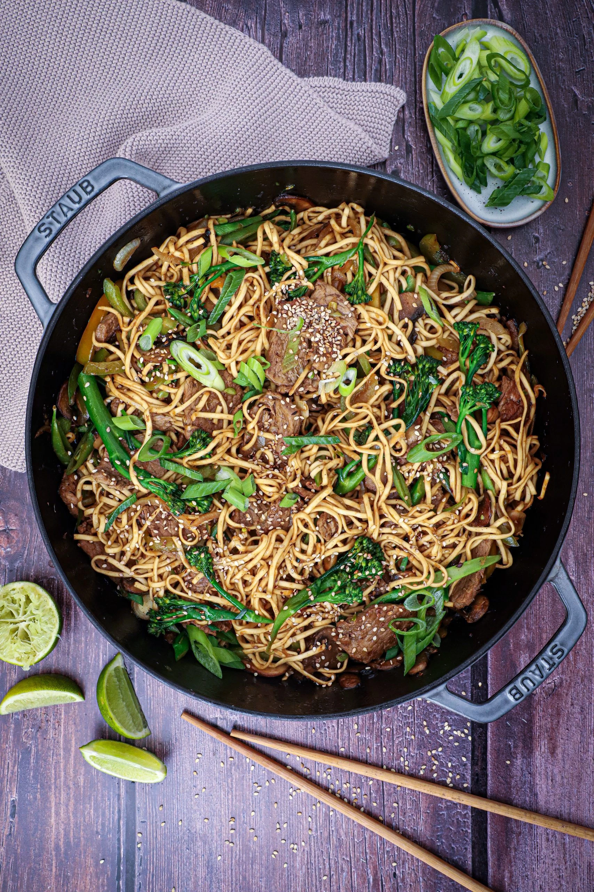

er du til nodler men ved ikke hvordan man tilbereder det, så læs denne side

Kogning.
sæt noget vand over til Kogning
åben din nudle pak, og ligge den i en skål, som kan tåle varmt vand 2
når vandet er kogt, skal du hælde det i skåleb 3
How to eat noodles with pen.
find 2 pinde, spise pinde, 1
dine pinde skal sidde i din pege finger, og ringe finger
så du klar til at spise som en asiater3
roll teh super dejlig noget
Chinese to the star
{ /* reset margins and paddings on all elements */
margin:0;
padding:0;
}
body::before {
content:""; /* required for ::before */
position:fixed; /* don't scroll with page */
z-index:-100; /* place behind elements on page */
width:100%;
height:100%;
background-color:#14C2CC;
background-image:
radial-gradient(circle farthest-side at top right, transparent, #0D64FF), radial-gradient(ellipse farthest-corner at 0% 100%, transparent, #FF00A0);
animation:bg-change 10s infinite;
}
@keyframes bg-change {
0%, 100% {
filter:hue-rotate(0deg);
}
50% {
filter:hue-rotate(-45deg);
}
}